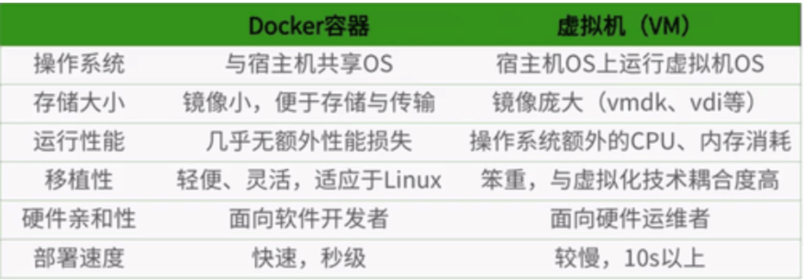

docker简介
为什么会有docker出现
一款产品从开发到上线，从操作系统，到运行环境，再到应用配置。作为开发+运维之间的协作我们需要关心很多东西，这也是很多互联网公司都不得不面对的问题，特别是各种版本的迭代之后，不同版本环境的兼容，对运维人员都是考验
Docker之所以发展如此迅速，也是因为它对此给出了一个标准化的解决方案。
环境配置如此麻烦，换一台机器，就要重来一次，费力费时。很多人想到，能不能从根本上解决问题，软件可以带环境安装？也就是说，安装的时候，把原始环境一模一样地复制过来。开发人员利用 Docker 可以消除协作编码时“在我的机器上可正常工作”的问题。
传统上认为，软件编码开发/测试结束后，所产出的成果即是程序或是能够编译执行的二进制字节码等(java为例)。而为了让这些程序可以顺利执行，开发团队也得准备完整的部署文件，让维运团队得以部署应用程式，开发需要清楚的告诉运维部署团队，用的全部配置文件+所有软件环境。不过，即便如此，仍然常常发生部署失败的状况。Docker镜像的设计，使得Docker得以打破过去「程序即应用」的观念。透过镜像(images)将作业系统核心除外，运作应用程式所需要的系统环境，由下而上打包，达到应用程式跨平台间的无缝接轨运作。
docker历史
2010年，几个的年轻人，就在美国成立了一家公司 dotcloud
做一些pass的云计算服务！LXC（Linux Container容器）有关的容器技术！
Linux Container容器是一种内核虚拟化技术，可以提供轻量级的虚拟化，以便隔离进程和资源。
他们将自己的技术（容器化技术）命名就是 Docker
Docker刚刚延生的时候，没有引起行业的注意！dotCloud，就活不下去！
2013年，Docker开源！
越来越多的人发现docker的优点！火了。Docker每个月都会更新一个版本！
2014年4月9日，Docker1.0发布！
docker为什么这么火？十分的轻巧！
在容器技术出来之前，我们都是使用虚拟机技术！
docker理念
Docker是基于Go语言实现的云开源项目。
Docker的主要目标是“Build，Ship and Run Any App,Anywhere”，也就是通过对应用组件的封装、分发、部署、运行等生命周期的管理，使用户的APP（可以是一个WEB应用或数据库应用等等）及其运行环境能够做到“一次封装，到处运行”。
Linux 容器技术的出现就解决了这样一个问题，而 Docker 就是在它的基础上发展过来的。将应用运行在 Docker 容器上面，而 Docker 容器在任何操作系统上都是一致的，这就实现了跨平台、跨服务器。只需要一次配置好环境，换到别的机子上就可以一键部署好，大大简化了操作
解决了运行环境和配置问题软件容器，方便做持续集成并有助于整体发布的容器虚拟化技术。
docker可以做什么
之前的虚拟机技术
虚拟机（virtual machine）就是带环境安装的一种解决方案。
它可以在一种操作系统里面运行另一种操作系统，比如在Windows 系统里面运行Linux 系统。应用程序对此毫无感知，因为虚拟机看上去跟真实系统一模一样，而对于底层系统来说，虚拟机就是一个普通文件，不需要了就删掉，对其他部分毫无影响。这类虚拟机完美的运行了另一套系统，能够使应用程序，操作系统和硬件三者之间的逻辑不变。
- 虚拟机的缺点：
（1）资源占用多
（2）冗余步骤多
（3）启动慢
虚拟机：在window中装一个VMware，通过这个软件我们可以虚拟出来一台或者多台电脑！笨重！
容器虚拟化技术
由于前面虚拟机存在这些缺点，Linux 发展出了另一种虚拟化技术：Linux 容器（Linux Containers，缩写为 LXC）。
Linux 容器不是模拟一个完整的操作系统，而是对进程进行隔离。有了容器，就可以将软件运行所需的所有资源打包到一个隔离的容器中。容器与虚拟机不同，不需要捆绑一整套操作系统，只需要软件工作所需的库资源和设置。系统因此而变得高效轻量并保证部署在任何环境中的软件都能始终如一地运行。- Docker 和传统虚拟化方式的不同之处
传统虚拟机技术是虚拟出一套硬件后，在其上运行一个完整操作系统，在该系统上再运行所需应用进程；
而容器内的应用进程直接运行于宿主的内核，容器内没有自己的内核，也没有进行硬件虚拟。因此容器要比传统虚拟机更为轻便
每个容器之间互相隔离，每个容器有自己的文件系统 ，容器之间进程不会相互影响，能区分计算资源。
Docker十分的小巧，运行镜像就可以了！小巧！ 几个M 秒级启动！
开发/运维（DevOps）
- 一次构建，随处运行
更快速的应用交付和部署
更便捷的升级和扩缩容
更简单的系统运维
更高效的计算资源利用
docker深入
docker的基本组成
images
container
repository
需要正确的理解仓储/镜像/容器这几个概念:
Docker 本身是一个容器运行载体或称之为管理引擎。我们把应用程序和配置依赖打包好形成一个可交付的运行环境，这个打包好的运行环境就似乎 image镜像文件。只有通过这个镜像文件才能生成 Docker 容器。image 文件可以看作是容器的模板。Docker 根据 image 文件生成容器的实例。同一个 image 文件，可以生成多个同时运行的容器实例。
image 文件生成的容器实例，本身也是一个文件，称为镜像文件。
一个容器运行一种服务，当我们需要的时候，就可以通过docker客户端创建一个对应的运行实例，也就是我们的容器
至于仓储，就是放了一堆镜像的地方，我们可以把镜像发布到仓储中，需要的时候从仓储中拉下来就可以了。
docker安装
- 环境准备：centos7
1 | 确定是centos7及以上版本 |
1 | 启动docker |
- 配置镜像加速
1 | mkdir /etc/docker |
docker卸载
1 | 具体可以参考官网 |
hello-world
1 | docker run hello-world |
- run做了什么
docker底层原理
docker是怎么工作的
Docker是一个Client-Server结构的系统，Docker守护进程运行在主机上， 然后通过Socket连接从客户端访问，守护进程从客户端接受命令并管理运行在主机上的容器。 容器，是一个运行时环境，就是我们前面说到的集装箱。
为什么docker比VM快
GuestOS： VM（虚拟机）里的的系统（OS） HostOS：物理机里的系统（OS）
（1）docker有着比虚拟机更少的抽象层。由亍docker不需要Hypervisor实现硬件资源虚拟化,运行在docker容器上的程序直接使用的都是实际物理机的硬件资源。因此在CPU、内存利用率上docker将会在效率上有明显优势。
（2）docker利用的是宿主机的内核,而不需要Guest OS。因此,当新建一个容器时,docker不需要和虚拟机一样重新加载一个操作系统内核。仍而避免引寻、加载操作系统内核返个比较费时费资源的过程,当新建一个虚拟机时,虚拟机软件需要加载Guest OS,返个新建过程是分钟级别的。而docker由于直接利用宿主机的操作系统,则省略了返个过程,因此新建一个docker容器只需要几秒钟

docker常用命令
帮助命令
1 | docker version |
镜像命令
（1）docker imgaes（列出本地主机上的镜像）
1 | -a :列出本地所有的镜像（含中间映像层） |
（2）docker search（查找镜像）
1 | 列出点赞数超过30的tomcat |
（3）docker pull（下载镜像）
1 | docker pull [image_name:TAG] |
（4）docker rmi（删除镜像）
1 | docker rmi [image_id | image_name:TAG] |
容器命令
（1）新建并启动容器
1 | --name="容器新名字": 为容器指定一个名称； |
（2）列出当前所有正在运行的容器
1 | -a :列出当前所有正在运行的容器+历史上运行过的 |
（3）退出容器
1 | 容器退出 |
（4）启动容器 / 重启容器
1 | docker start [container_id | container_name] |
（5）停止容器 / 强制停止容器
1 | docker stop [container_id | container_name] |
（6）删除已停止的容器
1 | docker rm [container_id | container_name] |
其它重要命令
启动守护式容器
1 | docker run -d [container_name] |
#使用镜像centos:latest以后台模式启动一个容器
docker run -d centos
问题：然后docker ps -a 进行查看, 会发现容器已经退出
很重要的要说明的一点: Docker容器后台运行,就必须有一个前台进程.
容器运行的命令如果不是那些一直挂起的命令（比如运行top，tail），就是会自动退出的。
这个是docker的机制问题,比如你的web容器,我们以nginx为例，正常情况下,我们配置启动服务只需要启动响应的service即可。例如
service nginx start
但是,这样做,nginx为后台进程模式运行,就导致docker前台没有运行的应用,
这样的容器后台启动后,会立即自杀因为他觉得他没事可做了.
所以，最佳的解决方案是,将你要运行的程序以前台进程的形式运行
查看日志
1 | docker run -d centos /bin/sh -c "while true;do echo hello zzyy;sleep 2;done" |
查看容器内运行的进程
1 | docker top [container_id] |
查看容器内部细节
1 | dockerc inspect [container_id] |
进入正在运行的容器并以命令行交互
1 | docker exec -it [container_id] /bin/bash |
- 二者的区别
exec：是在容器中打开新的终端，并且可以启动新的进程；
attach：直接进入容器启动命令的终端，不会启动新的进程
从容器内拷贝文件到主机上
1 | docker cp 容器ID:容器内路径 目的主机路径 |
常用命令
1 | attach Attach to a running container # 当前 shell 下 attach 连接指定运行镜像 |
docker实战之部署nginx、tomcat、elasticsearch
部署nginx
1 | docker search nginx |
部署tomcat
1 | docker run --name mytomcat -p 8090:8080 tomcat |
部署es
1 | docker run -d --name es -p 9200:9200 -p 9300:9300 -e "discovery.type=single-node" elasticsearch |
Portainer 可视化面板安装
- portainer：Docker图形化界面管理工具！提供一个后台面板供我们操作！
1 | docker run -d -p 8080:9000 \ |
Rancher(CI/CD再用)
镜像原理之联合文件系统
镜像是什么
镜像是一种轻量级、可执行的独立软件保，用来打包软件运行环境和基于运行环境开发的软件，他包含运行某个软件所需的所有内容，包括代码、运行时库、环境变量和配置文件。
所有应用，直接打包docker镜像，就可以直接跑起来！
如何得到镜像
- 从远程仓库下载
- 别人拷贝给你
- 自己制作一个镜像 DockerFile
Docker镜像加载原理
- UnionFs （联合文件系统）
UnionFs（联合文件系统）：Union文件系统（UnionFs）是一种分层、轻量级并且高性能的文件系统，他支持对文件系统的修改作为一次提交来一层层的叠加，同时可以将不同目录挂载到同一个虚拟文件系统下（ unite several directories into a single virtual filesystem)。Union文件系统是 Docker镜像的基础。镜像可以通过分层来进行继承，基于基础镜像（没有父镜像），可以制作各种具体的应用镜像
特性：一次同时加载多个文件系统，但从外面看起来，只能看到一个文件系统，联合加载会把各层文件系统叠加起来，这样最终的文件系统会包含所有底层的文件和目录。
- Docker镜像加载原理
docker的镜像实际上由一层一层的文件系统组成，这种层级的文件系统UnionFS。
boots(boot file system）主要包含 bootloader和 Kernel, bootloader主要是引导加 kernel, Linux刚启动时会加bootfs文件系统，在 Docker镜像的最底层是 boots。这一层与我们典型的Linux/Unix系统是一样的，包含boot加載器和内核。当boot加载完成之后整个内核就都在内存中了，此时内存的使用权已由 bootfs转交给内核，此时系统也会卸载bootfs。
rootfs（root file system),在 bootfs之上。包含的就是典型 Linux系统中的/dev,/proc,/bin,/etc等标准目录和文件。 rootfs就是各种不同的操作系统发行版，比如 Ubuntu, Centos等等。
- 平时我们安装进虚拟机的CentOS都是好几个G，为什么Docker这里才200M？
对于个精简的OS,rootfs可以很小，只需要包合最基本的命令，工具和程序库就可以了，因为底层直接用Host的kernel，自己只需要提供rootfs就可以了。由此可见对于不同的Linux发行版， boots基本是一致的， rootfs会有差別，因此不同的发行版可以公用bootfs.
虚拟机是分钟级别，容器是秒级！
分层理解
- 思考：为什么Docker镜像要采用这种分层的结构呢？
最大的好处，我觉得莫过于资源共享了！比如有多个镜像都从相同的Base镜像构建而来，那么宿主机只需在磁盘上保留一份base镜像，同时内存中也只需要加载一份base镜像，这样就可以为所有的容器服务了，而且镜像的每一层都可以被共享。
commit镜像
1 | docker commit -m="sorozy-centos-mysql" -a="sorozy" 容器id 目标镜像名:[版本TAG] |
Docker容器数据卷
是什么
先来看看Docker的理念：
将运用与运行的环境打包形成容器运行 ，运行可以伴随着容器，但是我们对数据的要求希望是持久化的.容器之间希望有可能共享数据
Docker容器产生的数据，如果不通过docker commit生成新的镜像，使得数据做为镜像的一部分保存下来，
那么当容器删除后，数据自然也就没有了。
为了能保存数据在docker中我们使用卷。
- 一句话：有点类似我们Redis里面的rdb和aof文件
能干嘛
卷就是目录或文件，存在于一个或多个容器中，由docker挂载到容器，但不属于联合文件系统，因此能够绕过Union File System提供一些用于持续存储或共享数据的特性;
卷的设计目的就是数据的持久化，完全独立于容器的生存周期，因此Docker不会在容器删除时删除其挂载的数据卷
特点：
1：数据卷可在容器之间共享或重用数据
2：卷中的更改可以直接生效
3：数据卷中的更改不会包含在镜像的更新中
4：数据卷的生命周期一直持续到没有容器使用它为止
容器的持久化
容器间继承+共享数据
数据卷 - 容器内添加
直接命令添加
1 | docker run -it -v /宿主机绝对路径目录:/容器内目录 镜像名 |
- 容器停止退出后，主机修改后数据依然同步
DockerFile添加
1 | （1）根目录下新建mydocker文件夹并进入 |
说明：
出于可移植和分享的考虑，用-v 主机目录:容器目录这种方法不能够直接在Dockerfile中实现。
由于宿主机目录是依赖于特定宿主机的，并不能够保证在所有的宿主机上都存在这样的特定目录。
踩坑
Docker挂载主机目录Docker访问出现cannot open directory .: Permission denied
解决办法：在挂载目录后多加一个–privileged=true参数即可